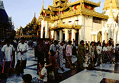

シュエダゴンパゴダ/ヤンゴン
ShweDagonPagoda/YANGON
ミャンマーの首都ヤンゴン。首都の割には夜も早く地味な街だが他の街はもっと地味なので首都の面目を保っている。実際初めて訪れた時には田舎だなあ、と思ったが、地方を一回りして戻ってきた時には眼も眩む程の大都会に見えた。
そのヤンゴンのシンボルがシュエダゴンパゴダである。
ミャンマーに来てここに寄らない人はまずいないだろう、という位の大観光地にしてヤンゴン市民の心の拠り所、それがシュエダゴンパゴダである。東京で言えば東京タワーと浅草寺とお台場を合体させたようなようなものか。
ここではシュエダゴンパゴダの説明は勿論だが、この後訪れるミャンマーのパゴダに共通して登場する基本アイテムなども一通り揃っているのでそれらも含めて紹介するのでちょっと長くなるがヨロシク。
境内の半立体レリーフ。右の人物が半分絵画になっているのがお判りだろうか。
あちこちに仏像が所狭しと並んでいる。ありがたみという概念が蒸発してお脳がとろけてくる。
供え物や蝋燭も過密。
|

|

|
突如、向こうの方から横並びの女性軍が登場。夕方のお掃除隊である。皆、帚をもってこちらに迫ってくる。Gメン'75を思い出したぞ（古いか）！
お祈りをしていようが瞑想をしていようがお構いなし。ガンガン前へ進む。
次にやって来たのは男組。一つにつながった巨大横長モップを持っての登場。逃げまどう参拝客。
あ、ウチの子供が巻き込まれた！

・・・と思ったら一緒にモップ懸けをやっていた。
これはパゴダでよく見かける仏塔の四隅に建っている仏塔守。日本で言えば狛犬のようなものか。何故かお尻が大きく二つに裂けて仏塔の角にめり込んでいる。このセンスは理解不能。
マルセ太郎とぼんちおさむを発見。


そろそろ日も暮れてきたので帰りましょう。細かく観てたら一日かかっちゃうパゴダである。

参道には土産物屋がズラリ。仏壇屋で仏壇をゲット。
次のスポットへGO!
ミャンマーパゴダ列伝のページへ
珍寺大道場 HOME